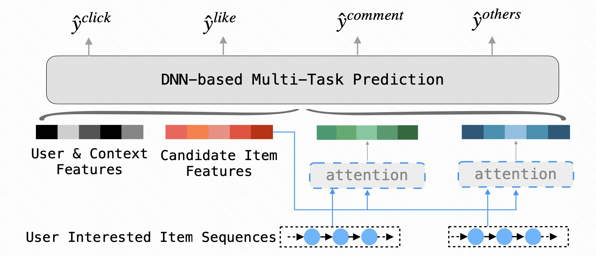
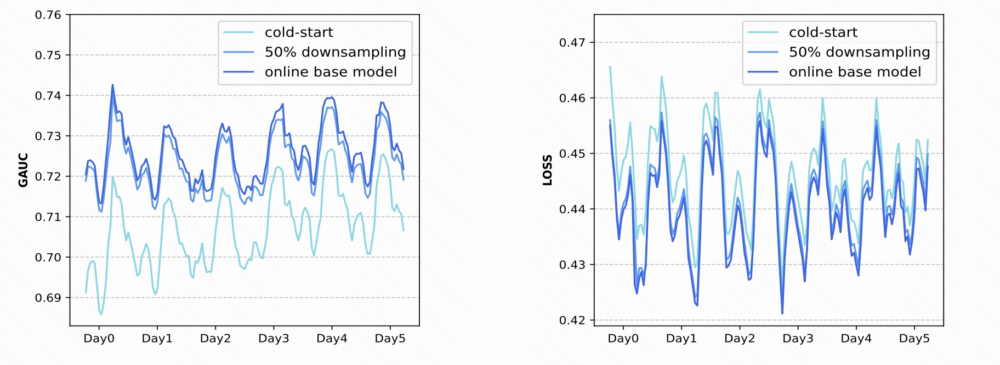
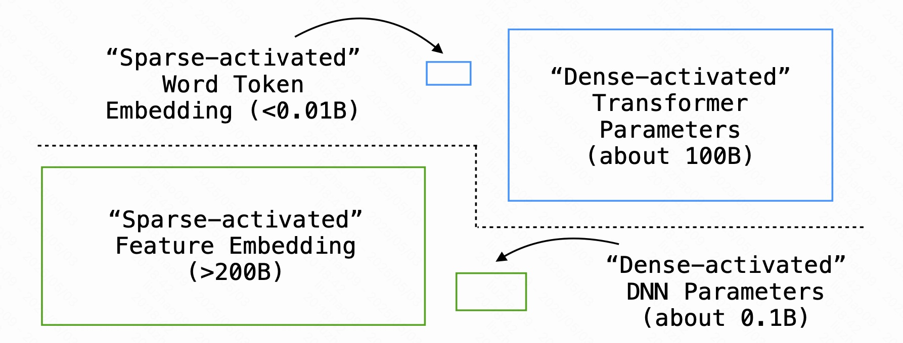
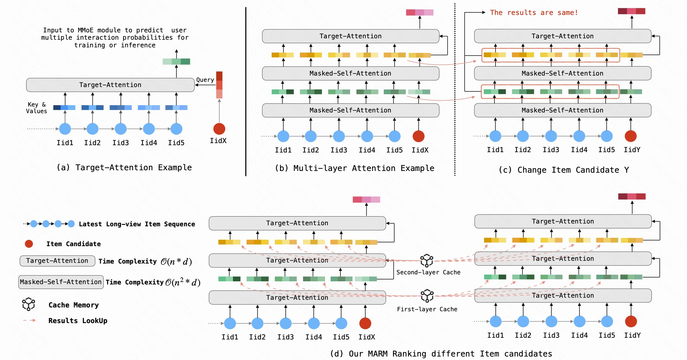
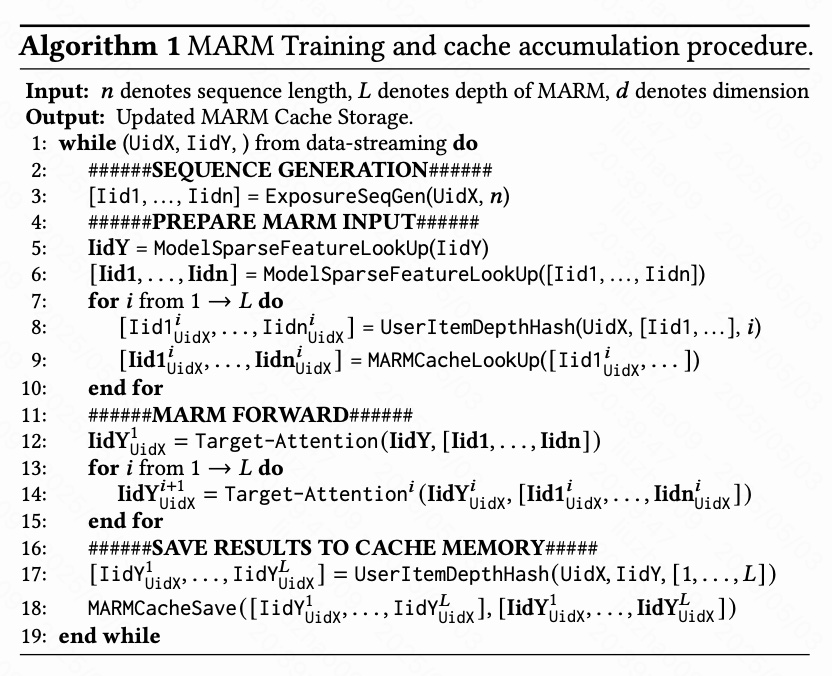
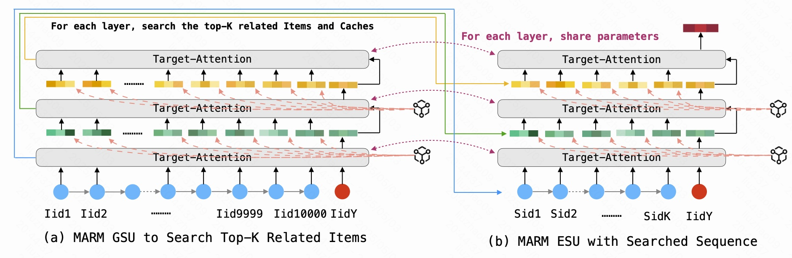
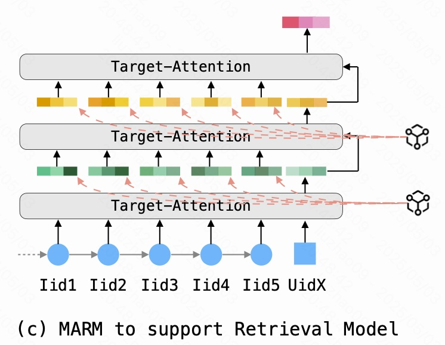

在学习MARM之前，建议阅读：快手海外MARM：打开推荐系统的Scaling Law的正确姿势，MARM的一作也是快手与目前我实习所在部门的成员，也是我的二面面试官（真的很厉害），当时面试官问我看过那些印象深刻的文章，我只说了OneRec，毕竟在学校里科研没有那么考虑推荐的效率，都是过分复杂模型，关注模型的准确率了，当时二面面试官说到在实际的推荐场景中，我们都是要尽可能简化模型确保每个模块、数据都不是冗余的，有所受教。
MARM的核心思想是借鉴LLM中的KV缓存机制，通过缓存部分计算结果来加速推荐系统的处理流程，并于SIM结合。之前粗略的看过，趁着假期也来学习一下这篇文章。
MARM文章链接：https://arxiv.org/pdf/2411.09425
SIM文章链接：https://arxiv.org/pdf/2006.05639
1. 背景
1.1 模型规模与推荐系统的挑战
近年来，随着大数据和计算能力的提升，模型规模和数据规模的扩展成为了各个领域研究中的重要课题，尤其是在自然语言处理（NLP）、计算机视觉（CV）和推荐系统（RecSys）等领域。OpenAI的Scaling-laws报告指出，随着模型参数数量和数据量的增长，模型的性能通常呈现出幂律增长趋势，这一现象在GPT等大规模预训练模型中得到了广泛应用。然而，这一方法并不能直接应用到推荐系统中，因为推荐系统面临着与NLP等任务截然不同的挑战。
推荐系统与NLP模型在处理数据的方式上有显著差异。NLP任务通常依赖于大量的文本数据和语言模型，这些模型可以在数百万甚至数十亿参数的情况下工作。然而，推荐系统则需要应对海量的用户行为数据和实时交互需求，这导致了推荐系统在计算效率和数据存储方面面临更为复杂的挑战。在推荐系统中，训练样本的数量和模型参数虽然重要，但计算复杂度（即FLOPs）才是性能瓶颈的关键因素。
下图展示了推荐系统中的多任务学习模型，在图中可以看到如何结合多个输入特征来进行预测。推荐系统中的每个任务（如点击、喜欢、评论等）都有对应的关注机制（Attention），并且用户的兴趣序列是通过网络中的Attention模块来提取的。这种架构反映了推荐系统需要处理多种信息，并对其进行学习和预测。

1.2 缓存技术在推荐系统中的潜力
针对上述问题，本篇文章提出了MARM（Memory Augmented Recommendation Model，记忆增强推荐模型）这一创新方案。MARM通过缓存技术有效降低了推荐系统中计算复杂度的影响，提升了模型的计算效率。该模型的核心思想是通过缓存部分复杂模块计算结果，避免重复计算，从而减少了不必要的计算量。
MARM不仅仅是对传统推荐系统架构的改进，它还通过扩展单层注意力机制，将其升级为多层目标注意力机制，从而在不显著增加计算开销的前提下，充分挖掘了用户的兴趣序列信息。通过这种方式，MARM能够在高效性和计算复杂度之间找到一个平衡点，既保证了推荐效果，又有效地控制了资源消耗。
下图反映了在流式训练过程中，通过不同的训练策略（在线基础模型、50%样本下采样和冷启动模型），模型性能随数据量的增加而变化。可以看到，随着数据量的增加，模型性能差距逐渐缩小，尤其是在训练模型已经从冷启动状态转为在线基础模型时，随着时间的推移，性能提升的趋势变得明显。

1.3 推荐系统中的数据与计算需求
与传统的NLP任务不同，推荐系统面临的另一个核心挑战是数据量庞大且实时性要求高。例如，Kuaishou（快手）等短视频平台每天需要处理上百亿条用户行为数据，且每次推送都必须在几毫秒内作出响应。这对计算能力提出了极高的要求。在这种场景下，如何平衡模型的准确性和响应速度，以及如何高效地处理海量数据，成为了设计推荐系统时必须解决的关键问题。
下图展示了推荐系统模型与LLM模型在参数分布上的不同。LLM模型的主要参数集中在密集激活的Transformer模块中，而推荐系统模型（如MARM）则将稀疏激活的特征嵌入作为主要的学习参数，体现了推荐系统模型在处理用户行为数据时与NLP模型的差异。

本篇文章通过引入MARM，提出了一种新型的推荐系统架构，旨在通过缓存机制和可扩展的注意力模型来提升推荐系统在计算和存储上的效率，同时不牺牲推荐质量。MARM的设计理念与传统的深度学习推荐模型（如DIN、SIM、TWIN等）相结合，利用缓存存储和层次化的注意力机制，充分利用了历史数据和实时数据的组合优势，从而实现了较为理想的性能提升。
1.4 复杂度对比

在推荐系统的模型中，如何高效地处理序列数据并提取出用户的兴趣点，是设计中的一个核心问题。传统的Masked-Self-Attention机制虽然能够捕捉到更为复杂的序列关系和依赖性，但其计算复杂度（FLOPs）往往较高，尤其在需要处理大规模数据时，这会导致系统性能的瓶颈。因此，如何在保持性能的同时降低计算复杂度，成为了研究的一个重要方向。
如图2中所示，Target-Attention和Masked-Self-Attention在时间复杂度上的差异十分明显。Target-Attention的计算复杂度是O(n * d)，其中n表示序列的长度，d表示表示维度。而Masked-Self-Attention则具有更高的复杂度，达到O(n² * d)，其中的n²项使得其计算复杂度随着序列长度的增加而急剧增长。这意味着，虽然Masked-Self-Attention能够更细致地捕捉每个元素之间的关系，但在处理大规模用户序列时，其计算量过大，可能导致系统响应延迟增加，甚至超出系统的处理能力。
图2（b）展示了一个多层Target-Attention机制的示例。相比于单层的Target-Attention，多层结构允许模型在不同的层次上进行处理，每一层都通过先前的层的输出进行改进。这种方式通过逐层传递计算结果，有效避免了高复杂度Masked-Self-Attention的重复计算，且每一层都能捕捉到更深层次的特征关系。
图2（c）则进一步阐明了在更换候选项（如IidX到IidY）时，模型如何在保持高效计算的同时，通过不同的Target-Attention层来更新结果，避免了因为重新计算每一层的全部关系而造成的冗余计算。
而MARM的核心思想是，通过缓存部分已计算的结果，减少重复计算，从而降低了复杂度。在文章中，作者指出，MARM通过缓存先前计算的Target-Attention的输出结果，而不是Masked-Self-Attention的结果。Target-Attention的计算复杂度为O(n * d)，相较于Masked-Self-Attention，其计算复杂度要低得多。
图2（d）展示了MARM的关键优化：通过缓存Target-Attention计算结果来提高效率。具体来说，当用户的序列很长时，Target-Attention会针对每个新输入进行计算。而MARM会缓存已计算的Target-Attention结果，并在处理新样本时直接查找缓存的结果，从而避免了对已经计算过的部分重新执行计算。通过这种方式，MARM能够以较低的计算复杂度（O(n * d)）完成序列建模，同时减少了对计算资源的消耗。
1.5 MARM模型的创新性
MARM的创新之处在于其提出了一种新的缓存扩展法则，通过缓存复杂计算结果，降低了多层注意力机制的计算复杂度，尤其在在线推理的场景下，它能够显著提升推荐系统的响应速度。此外，MARM还能够与多种推荐系统模型兼容，包括检索模型、级联模型和排序模型，并且能够在现有的推荐系统架构上进行高效集成。
MARM不仅在理论上提出了一种新型的缓存-性能法则，在实际应用中也能够有效解决推荐系统的计算瓶颈问题，为推荐系统领域提供了一个全新的技术路径。
2. 方法
2.1 流程

图3展示了MARM模型的实时缓存更新与使用工作流程。这张图通过两部分来阐述MARM的操作：模型训练阶段（a）和模型推理阶段（b）。以下是对该图的详细解释。
模型训练阶段（a）：
在训练过程中，我们看到缓存存储了用户历史的项目序列，并且随着新的用户交互数据（如Iid6、Iid7、Iid8等）加入，模型会逐步更新这些缓存数据。在每一步中，MARM的多层目标注意力模块（Target-Attention）会处理输入的项目序列并计算相应的输出结果。
输入项目序列：
每个训练周期开始时，模型会接收用户的最新暴露项目序列，这些项目是用户最近与平台内容互动的结果。例如，在图中，Iid6表示当前用户最近观看的第一个项目。
模型计算与更新缓存：
MARM通过目标注意力机制计算当前项目（如Iid6）与历史项目（如Iid1到Iid5）之间的关系。在每一层计算完成后，Target-Attention模块将其计算结果存入缓存，并更新缓存中的数据。这一过程有效地减轻了计算负担，并提升了后续推理的效率。
缓存更新的顺序：
如图所示，Iid6的计算结果被存入缓存后，新的项目Iid7会继续通过类似的计算过程进行处理，最终会被缓存起来用于后续使用。每一个新的项目都会不断扩展当前的暴露项目序列，并将计算结果逐步写入缓存。
模型推理阶段（b）：
在推理阶段，MARM依旧利用先前训练时缓存的结果来进行实时推理。在这种模式下，Target-Attention模块的多层结构继续执行目标注意力计算，但此时主要是依赖缓存中保存的历史计算结果来加速推理。
推理输入：
在推理过程中，模型会接收到最新的项目（如IidY）。此时，这些项目的计算将基于之前已经缓存的历史项目（如Iid1到Iid8）的计算结果。
缓存的读取与使用：
图中标出了蓝色框，这些框标示了如何将历史计算结果从缓存中提取出来并与新的目标项（如IidY）一起进行计算。在这个过程中，MARM通过从缓存中读取先前计算的结果，避免了重新计算，从而显著降低了计算复杂度和延迟。
提高推理效率：
MARM通过缓存和重用历史计算结果，在推理过程中能有效减少重复计算。随着项目序列的不断增长，模型逐渐能够根据积累的数据，准确高效地进行实时推理，这对于在线推荐系统的响应速度至关重要。
2.1.1 序列生成器
在MARM模型的工作流程中，序列生成器是第一步，它的作用是为每个用户生成一个最新的项目暴露序列。这个序列代表了该用户在某段时间内与平台内容的交互历史。例如，在推荐系统中，用户的兴趣通常由他们的行为数据（如点击、点赞、评论等）来反映，因此通过生成最新的项目序列，可以捕捉到用户当前的兴趣点。序列生成器利用用户的历史数据，将这些互动按时间顺序排列，生成一个长度为$n$的用户兴趣序列${[Iid1, Iid2, Iid3, \dots, Iidn]}$，其中$n$是序列的长度。这些序列通过模型对用户历史的反馈，帮助模型理解用户的兴趣变化趋势，并为后续的推荐任务提供基础数据。根据文章中描述的内容，序列生成器不仅能够处理用户的交互数据，还能根据需要筛选出符合特定条件的项目，例如，筛选出那些被用户长期观看或反馈的项目，以此更精准地建模用户的长期兴趣。
2.1.2 外部缓存查找
接下来的步骤是外部缓存查找，这个部分的关键在于如何高效地存储和查找历史计算结果。随着MARM模型对每个用户兴趣的逐层建模，序列生成器产生的每个历史项（如项目ID）都可以存储到外部缓存中，以供后续使用。这个缓存存储的内容不仅仅包括用户的ID信息，还包括该用户对某些项目的兴趣表示，通常以“learnable embedding”（可学习的嵌入）形式保存。
在此步骤中，模型首先将当前用户的最新项${IidY}$和历史项${[Iid1, Iid2, \dots, Iidn]}$的ID通过一种称为SparseFeatureLookUp的方法映射为嵌入表示。这个过程生成的ID表示是由高维的稀疏特征向量构成的，具体而言，这些向量捕捉了用户与项目之间的交互特征。接下来，如果该用户的历史序列已经缓存过，那么我们可以通过一个哈希策略将这些ID转换成缓存中存储的键，进行查找。这一过程的目的是避免重复计算，从而显著减少计算复杂度。缓存查找不仅提升了效率，还能更好地处理大规模数据。具体的查找过程通过公式${[Iid1, Iid2, \dots, Iidn]} = MARMCacheLookUp([Iid1, Iid2, \dots, Iidn])$来完成。
2.1.3 多目标注意力机制
MARM模型的核心之一是多目标注意力机制，这一机制可以有效地对用户兴趣进行建模。不同于传统的单层注意力机制，MARM采用了多层次的目标注意力层，这使得模型能够在不同的深度捕捉到用户兴趣的多维信息。在此过程中，每一层的目标注意力机制不仅关注当前目标项（即推荐的项目）与历史序列中其他项目之间的关系，还能够逐层积累和传递这些信息。
首先，通过公式${IidY1_{uidX} = TargetAttention(IidY, [Iid1, Iid2, \dots, Iidn])}$计算出当前目标项${IidY}$的初步兴趣表示，这一步的计算涉及到历史项与目标项之间的关系建模。然后，这些表示会被输入到接下来的多层目标注意力层中，例如${IidY2_{uidX} = TargetAttention(IidY1_{uidX}, [Iid1, Iid2, \dots, Iidn])}$，这样逐层传递的过程使得用户的长期兴趣得以更加丰富地展现。
与传统的自注意力机制不同，MARM通过引入多个层级的目标注意力，不仅能够捕捉用户当前的短期兴趣，还能通过层与层之间的互动，帮助模型更好地理解长期兴趣的变化。与此同时，这种多层结构也能够有效减少计算复杂度，因为每一层的计算都基于先前层级的缓存结果，从而避免了重复计算。
2.1.4 发结果到缓存
在完成目标注意力的计算之后，发结果到缓存是MARM工作流程中的最后一步。通过这一过程，模型会将每一层计算出来的用户兴趣表示保存到缓存中，以便在下次使用时能够快速访问。具体来说，MARM将计算出的结果（例如${IidY1_{uidX}, IidY2_{uidX}, \dots, IidYL_{uidX}}$）和其对应的哈希键一起保存到缓存中。这个缓存不仅存储了每一层的计算结果，还为后续可能的查询提供了快速访问路径。
在MARM的训练过程中，缓存的作用是至关重要的。随着用户交互数据的积累和多次训练，缓存中存储的数据量也会逐渐增大，模型能够通过这些历史数据更高效地完成对用户兴趣的建模。每当有新的用户交互数据输入时，缓存中的结果可以快速被查找和使用，这使得整个模型的推理速度得以提高，尤其是在在线推理阶段。通过这一机制，MARM能够在确保准确性的同时，显著减少计算成本和延迟，满足大规模推荐系统对于实时性和效率的要求。
流程伪代码如下：

输入与输出:
伪代码的输入包括用户ID（UidX）和项目ID（IidY），以及模型的序列长度（n）和深度（L）。输出是更新后的MARM缓存存储。这一过程是通过数据流的方式进行的，即每次输入新的用户交互数据，模型都会进行更新和计算。
1. 序列生成（Line 2–4）:
首先，模型需要生成用户的暴露项目序列。这一过程由ExposureSeqGen(UidX, n)实现，它从用户ID (UidX) 中生成一个按时间顺序排列的项目序列 [Iid1, ..., Iidn]。其中，n表示序列的长度（即用户过去观看的项目数量）。这部分的目的是为MARM模型提供用户的历史行为数据，作为后续模型计算的输入。
2. 准备MARM输入（Line 5–7）:
接下来，MARM准备所需的输入数据。在这一部分，首先通过 ModelSparseFeatureLookUp(IidY) 获取目标项目 IidY 的特征。接着，利用 ModelSparseFeatureLookUp([Iid1, ..., Iidn]) 获取用户历史暴露的项目特征。这里，IidY 是当前待预测的目标项目，而 [Iid1, ..., Iidn] 则是用户过往的行为序列。
3. 缓存查找（Line 8–9）:
在接下来的循环中，模型通过 UserItemDepthHash(UidX, [Iid1, ..., Iidn], i) 为每一层计算生成哈希值。这里的 i 表示层数（从1到L），通过这个哈希值，模型可以查找缓存中已保存的历史计算结果。这些结果能够帮助模型加速计算，避免重复计算。
4. MARM正向传播（Line 12–15）:
MARM的核心部分是正向传播过程。在这一过程中，模型使用目标项目的ID（IidY）和历史项目的ID（Iid1, ..., Iidn）进行目标注意力机制计算（Target-Attention）。通过这种计算，MARM能够有效地捕捉用户的兴趣与目标项目之间的关系。随着层数的增加，计算会递归地进行，通过多层次的目标注意力机制来逐步构建对目标项目的理解。
5. 保存结果到缓存（Line 17–18）:
每次计算完后，MARM将得到的结果保存到缓存中。具体来说，UserItemDepthHash(UidX, IidY, [1, ..., L]) 会生成一个哈希值来表示当前结果的含义，之后使用 MARMCacheSave 函数将计算结果存储到缓存中。存储的内容包括每一层的计算结果 [IidY1, ..., IidYL]。
6. 循环过程（Line 19）
整个过程会持续进行，每当有新的数据流（如新的用户交互数据）进入时，模型就会重复这一流程，进行新的序列生成、计算、缓存查找与更新。这样，MARM模型能够不断更新其缓存，以更高效地进行后续的推荐预测。
2.2 MARM与SIM
介绍了MARM的基础框架，通过基于最新观看的商品序列来建模用户的兴趣。然而，由于序列长度$n$的限制（约100），这导致早期存储的结果在超出该范围后不再被使用，从而浪费了存储资源。为了更好地解决这一问题，MARM进一步引入了基于搜索的兴趣模型（SIM），以最大化缓存结果的有效性。

2.2.1 SIM的两阶段模型
SIM（Search-based Interests Model）提出了一种两阶段级联建模方法，以弥补传统MARM的局限性。SIM的基本思想是：
- 粗略的通用搜索单元（GSU）：通过检索用户的长期历史（例如，超过10,000条数据）来查找与目标商品最相关的商品序列；
- 精确的搜索单元（ESU）：通过精细化的搜索结果来压缩搜索序列，以获得更精确的用户兴趣，从而精确计算与目标商品的关联。
这两个单元配合使用，通过逐步搜索相关商品，并最终选出最相关的商品序列。图4（a）展示了MARM GSU模块的运作方式，其中每一层模型都在计算过程中搜索与当前目标商品最相关的商品。
2.2.2 GSU与ESU的协同工作
在图4（a）中，给定用户的长期历史序列${[Iid1, Iid2, …, Iid10000]}$，MARM GSU模块的目标是为每一层生成最相关的商品序列${[Sid1, Sid2, …, SidK]}$，这些商品将作为输入传递给下游的ESU模块。与MARM模型相似，ESU模块也采用了目标注意力机制来计算与目标商品的关联。
ESU模块的输出是一个包含与目标商品最相关的商品序列的多层级别的结果。为了更加高效地计算，ESU采用了与目标注意力机制相同的参数，确保每一层的计算结果能够有效地支持模型的训练和推理。
2.2.3 MARM GSU与ESU的区别
尽管MARM GSU与ESU都使用了目标注意力机制，但它们的侧重点不同。GSU模块的目标是通过粗略的搜索在用户的长期历史中找到最相关的商品，并将这些商品序列传递给ESU模块进行进一步精细化计算。图4（b）则展示了MARM ESU模块在接收到来自GSU的搜索结果后，如何利用这些结果进行进一步的目标注意力计算。
2.2.4 缓存的作用
MARM与SIM的结合，使得MARM模型不仅能够处理最新的用户行为序列，还能有效地利用用户的历史数据进行兴趣建模。通过将每一层计算结果缓存起来，模型能够避免重复计算，减少计算复杂度，提升推理效率。通过这种方式，MARM成功地扩展了传统的单层注意力机制，构建了一个多层次的目标注意力网络。
2.3 MARM支持其他模型
在工业级推荐系统中，通常会采用多个模型分层进行推荐，以便从大量的候选项中筛选出最符合用户兴趣的物品。这些模型主要包括召回模型（Retrieval Model）、级联模型（Cascading Model）和排序模型（Ranking Model）。每种模型的目标是从候选项中筛选出符合要求的物品，层层过滤和精细化筛选，从而提高推荐结果的精确度和有效性。对于这些模型而言，MARM作为一个推荐模型模块，可以无缝地与它们配合使用。
2.3.1 召回模型（Retrieval Model）
召回模型的任务是从整个物品池中快速选出一个大的候选项集。通常情况下，它仅根据用户的历史行为数据，寻找与当前用户兴趣最相关的一些物品，而不需要预先指定物品的候选集。由于数据量庞大，召回模型往往需要处理数千甚至数万的物品候选集。

在MARM中，我们引入了一个创新的想法：在没有指定候选项的情况下，召回模型可以利用MARM缓存的历史结果，通过查询用户最新观看的200个物品来快速查找缓存中的结果，并通过用户ID特征替代传统的物品候选项，从而实现目标物品的Target-Attention计算。这一过程如图4(c)所示。通过这种方式，MARM可以在不需要直接传递完整候选项集的情况下，有效地支持召回模型，从而提高了召回效率和精确度。
2.3.2 级联模型（Cascading Model）
级联模型通常是一个小型的排序模型，它会根据上一步召回模型生成的候选项，从中筛选出最相关的几百个物品。这一过程需要通过一些高效的模块来进行，从而减少计算复杂度。级联模型往往包括多个层次的筛选，每一层都进一步精简候选集。
在MARM的框架中，级联模型的支持也是基于多层Target-Attention机制，和排序模型中的计算过程类似。图4(b)展示了这种级联方式。MARM通过使用多个Target-Attention层，配合缓存结果，减少了重复计算的成本。特别地，在级联模型中，不进行缓存重新积累，而是直接使用已经积累的MARM缓存结果，并仅使用用户最近的短期行为序列。这一做法有效节省了计算资源，同时保持了模型的一致性。
2.3.3 排序模型（Ranking Model）
排序模型则是最为复杂的一种，它需要从数百个候选项中筛选出最终的推荐结果，通常是在数据的稠密特征和模型计算的复杂度方面要求更高。在MARM中，排序模型通过使用多层目标注意力机制（Multi-layer Target-Attention）进行兴趣建模。这一过程能够有效地捕捉用户的长期兴趣变化以及当前的短期兴趣，同时也能通过缓存存储结果，避免了对历史数据的重复计算。
MARM能够在计算上极大地减少复杂度，这得益于它能够缓存Target-Attention的计算结果，降低计算时的FLOPs（浮点运算次数）。在支持排序模型时，MARM的作用是显而易见的，它不仅减轻了模型的计算负担，还通过缓存结果加速了查询过程。图4(b)中的示意图展示了当目标物品和缓存项相关时，如何利用MARM进行排序模型的支持。
通过这种方式，MARM不仅能够与召回模型和级联模型完美对接，还能无缝地嵌入到排序模型中，提供更加高效和精准的推荐效果。
3. 总结
MARM（Memory Augmented Recommendation Model），通过引入缓存技术，极大地优化了推荐系统中的计算复杂度。传统的推荐系统往往依赖大量的数据处理和高计算量，特别是在多层次的注意力机制中，计算复杂度往往会成为瓶颈。而MARM的创新之处就在于，它利用缓存存储计算结果，避免了重复计算，从而大大减少了计算资源的消耗。
通过对比不同的模型，MARM在解决计算瓶颈、提高效率方面展示了显著优势。使用多层目标注意力机制**来捕捉用户的长期和短期兴趣，同时通过缓存技术来减少不必要的重复计算。实验结果表明，MARM不仅能够优化传统的排序模型，还能与召回模型和级联模型紧密结合，提供高效、精准的推荐效果。
此外，MARM还具有很强的适应性和可扩展性，可以轻松集成到现有的推荐系统中，进一步提升系统的性能。通过在实际环境中的在线实验，MARM展示了显著的在线效果提升，尤其是在提升用户观看时长方面，取得了+2.079%的提升。
总的来说，MARM通过引入缓存优化计算复杂度，为工业级推荐系统提供了一个有效的解决方案。它不仅能够降低计算成本，还能在保持高效性的同时，提供高质量的推荐结果。这一研究为推荐系统领域带来了新的思路，也为未来推荐技术的发展提供了重要的借鉴。